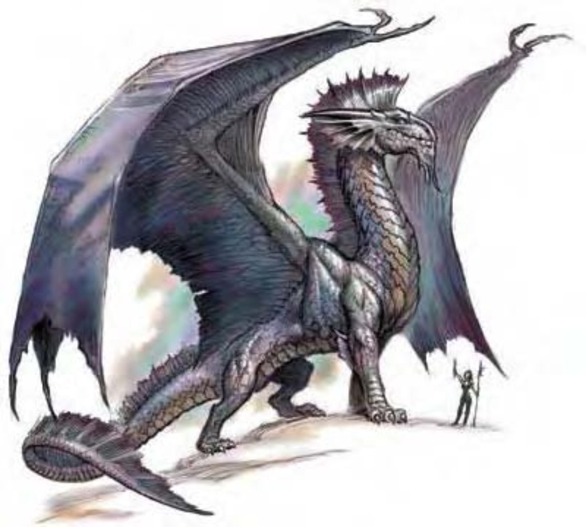

脸孔是一块平滑闪亮的平板，一道皱边经过脖子直到尾巴末端，由尖端发黑的脊柱支撑。有两支光滑发亮的角，翅膀宽阔有光泽。银龙带有雨水的味道，鳞片闪烁着液态金属微光。
银龙气质庄严堂皇，非常乐意帮助真的需要帮助的善良生物。与人打交道时，通常会化身为慈祥的老人或金发白肤的少女。雏龙的鳞片为蓝灰色带银色亮点，随着年龄鳞片会越来越亮，直到每一片都能用肉眼分辨。银龙从远处看起来就像是一尊由金属塑成的雕像。由于头上的银板，银龙有时也被称为盾龙。随着年龄瞳孔会越来越淡，最后眼睛就像是一颗水银球。
银龙喜欢将巢穴建在高处，像是与世隔绝的山峰或是藏身云雾之中。身边总是有股雨水的味道。即使建在云雾之中，巢穴内还是有块魔法区域具有牢固的地板，可以用来产卵和堆放财宝。
银龙偏爱人类的形貌更甚于原本面貌，经常和人类交往，甚至结为莫逆，但迟早银龙得恢复本来面貌并与其分离。银龙喜欢吃人类的食物，可以一直以此为食。
由于巢穴地点相近，银龙和红龙经常起冲突。两者的对决会相当激烈且致命，藉由通过联合其他的伙伴，通常是人类盟友，银龙常常可以占上风。
银龙的环境与社群环境：温带山脉。
组织：雏龙、幼龙、少年龙、青少年龙和青年龙：单独或数尾 (2-5)；成年龙、壮年龙、老年龙、极老龙、古龙、上古龙或太古龙：单独、成双或一家 (1-2，加上2-5个后代)。
挑战级数：雏龙4、幼龙5、少年龙7、青少年龙10、青年龙13、成年龙15、壮年龙18、老年龙20、极老龙21、古龙23、上古龙24、太古龙26。
宝藏：三倍标准。
阵营：总是守序善良。
进化：雏龙8-9HD；幼龙11-12HD；少年龙14-15HD；青少年龙17-18HD；青年龙20-21HD；成年龙23-24HD；壮年龙26-27HD；老年龙29-30HD；极老龙32-33HD；古龙35-36HD；上古龙38-39HD；太古龙41+ HD。
等级修正值：雏龙+4；幼龙+4；少年龙+5；其余无。
| 资料栏位 | 青年银龙 (Young Silver Dragon) 大型龙 (风系) |
| 生命骰 | 19d12+76 (199HP) |
| 先攻 | +0 |
| 速度 | 40英尺 (8格)、飞行150英尺 (不良) |
| 防御等级 | 28 (-1体型、+18天生)、接触9、措手不及28 |
| 基本攻击/擒抱 | +19 / +29 |
| 攻击 | 啮咬+24近战 (2d6+6) |
| 全力攻击 | 啮咬+24近战 (2d6+6) 及 2爪抓+19近战 (1d8+3) 及 2翼击+19近战 (1d6+3) 及 尾巴拍击+19近战 (1d8+9) |
| 占据/触及 | 10英尺 / 5英尺 (啮咬时10英尺) |
| 特殊攻击 | 喷吐攻击、威势、类法术能力、法术 |
| 特殊能力 | 化形、云上行走、伤害减免5 / 魔法、黑暗视觉120英尺、对强酸/寒冷/“睡眠术”/麻痹免疫、昏暗视觉、法术抗力20 |
| 豁免 | 强韧+15、反射+11、意志+15 |
| 属性 | 力量23、敏捷10、体质19、智力18、感知19、魅力18 |
| 技能与专长 | 平衡感+7、唬骗+16、专注+18、交涉+18、易容+23、医疗+15、躲藏-4、威吓+8、跳跃+29、神秘知识+14、自然知识+14、聆听+24、搜索+24、察言观色+24、法术辨识+26、侦察+24、特技动作+9 专长：特技专家、战斗施法、空袭、精通天生防具、游说专家、健壮、翻转 |
| 环境/阵营/CR | 温带山脉 / 总是守序善良 / 挑战级数：13 |
银龙个性并不凶暴，除非面对极为邪恶或具有侵略性的敌人，否则会尽量避免开战。如果有必要的话，在发动攻击前会使用“云雾术”或“操控天气”来让对方看不见或感到困惑。盛怒之下会使用“反重力”让敌人无助地飞上空中，再加以攫取。对会飞的敌人，银龙会躲藏在云雾之中（在晴天可以用“操控天气”来制造云层），再趁机跳出来攻击。
喷吐攻击 (超自然)：银龙有两种喷吐攻击，锥状寒气或是锥状麻痹气体。在麻痹气体锥状范围内的生物必须进行强韧检定，失败就被麻痹1d6轮，每一年龄层再加1轮。
青年银龙范例：40英尺锥状，10d8点寒冷伤害，通过反射检定 (DC=23) 则伤害减半；或40英尺锥状，麻痹1d6+5轮，通过强韧检定 (DC=23) 则无效。
化形 (超自然)：每天三次，银龙可以用标准动作化为任何中体型以下的动物或人形生物。银龙可持续保持变形形态，直到决定变回或更换形态为止。
云上行走 (超自然)：银龙可以在云端或雾中行走，如履平地。此能力持续生效，但可以任意停用或恢复。
类法术能力：每天3次――“云雾术” (成年龙或更老的龙)、“操控风相” (老年龙或更老的龙)；每天2次――“羽落术” (青少年龙或更老的龙)；每天1次――“操控天气” (古龙或更老的龙)、“反重力” (太古龙)。
技能：“唬骗”、“易容”和“跳跃”为银龙的本职技能。
青年银龙细节：
威势 (特异)：半径150英尺，对HD18以下生物有效，通过意志检定 (DC=23) 则无效。
类法术能力 (青年)：每天2次――“羽落术”，施法者等级5。
法术 (青年)：视同五级术士。一般已知术士法术 (6/7/5；豁免检定DC=14+法术等级)：
零级――“舞光术”、“侦测魔法”、“侦测毒性”、“法师帮手”、“修复术”、“魔法伎俩”；
一级――“冻寒之触”、“神眷”、“防护邪恶”、“隐形仆役”；
二级――“轻灵术”、“治疗中度伤”。
| 年龄层 | 体型 | 生命骰 (HP) | 力 | 敏 | 体 | 智 | 感 | 魅 | 基本攻击 / 擒抱 | 基本攻击 | 强韧 | 反射 | 意志 | 喷吐攻击 (DC) | 威势DC |
|---|---|---|---|---|---|---|---|---|---|---|---|---|---|---|---|
| 雏龙 | 小 | 8d12+7 (52) | 13 | 10 | 13 | 14 | 15 | 14 | +7 / +4 | +9 | +6 | +5 | +7 | 2d8 (14) | ― |
| 幼龙 | 中 | 10d12+20 (85) | 15 | 10 | 15 | 14 | 15 | 14 | +10 / +12 | +12 | +9 | +7 | +9 | 4d8 (17) | ― |
| 少年龙 | 中 | 13d12+26 (110) | 17 | 10 | 15 | 16 | 17 | 16 | +13 / +16 | +16 | +10 | +8 | +11 | 6d8 (18) | ― |
| 青少年龙 | 大 | 16d12+48 (152) | 19 | 10 | 17 | 18 | 19 | 18 | +16 / +24 | +19 | +13 | +10 | +14 | 8d8 (21) | ― |
| 青年龙 | 大 | 19d12+76 (199) | 23 | 10 | 19 | 18 | 19 | 18 | +19 / +29 | +24 | +15 | +11 | +15 | 10d8 (23) | 23 |
| 成年龙 | 超大 | 22d12+110 (253) | 27 | 10 | 21 | 20 | 21 | 20 | +22 / +38 | +28 | +18 | +13 | +18 | 12d8 (26) | 26 |
| 壮年龙 | 超大 | 25d12+125 (287) | 29 | 10 | 21 | 20 | 21 | 20 | +25 / +42 | +32 | +19 | +14 | +19 | 14d8 (27) | 27 |
| 老年龙 | 超大 | 28d12+168 (350) | 31 | 10 | 23 | 22 | 23 | 22 | +28 / +46 | +36 | +22 | +17 | +22 | 16d8 (30) | 30 |
| 极老龙 | 超大 | 31d12+186 (387) | 33 | 10 | 23 | 24 | 25 | 24 | +31 / +50 | +40 | +23 | +17 | +24 | 18d8 (31) | 32 |
| 古龙 | 巨 | 34d12+238 (459) | 35 | 10 | 25 | 26 | 27 | 26 | +34 / +58 | +42 | +26 | +19 | +27 | 20d8 (34) | 35 |
| 上古龙 | 巨 | 37d12+333 (573) | 39 | 10 | 29 | 28 | 29 | 28 | +37 / +63 | +47 | +29 | +20 | +29 | 22d8 (37) | 37 |
| 太古龙 | 超巨 | 40d12+400 (660) | 43 | 10 | 31 | 30 | 31 | 30 | +40 / +72 | +48 | +32 | +22 | +32 | 24d8 (40) | 40 |
| 年龄层 | 速度 | 先攻权 | 防御等级 | 特殊能力 | 施法者等级 | SR |
|---|---|---|---|---|---|---|
| 雏龙 | 40英尺、飞行100英尺 (普通) | +0 | 17 (-1体型、+6天生)、接触11、措手不及17 | 化形、对强酸和寒冷免疫、云上行走、易受火焰伤害 | ― | ― |
| 幼龙 | 40英尺、飞行150英尺 (不良) | +0 | 19 (+9天生)、接触10、措手不及19 | 化形、对强酸和寒冷免疫、云上行走、易受火焰伤害 | ― | ― |
| 少年龙 | 40英尺、飞行150英尺 (不良) | +0 | 22 (+12天生)、接触10、措手不及22 | 化形、对强酸和寒冷免疫、云上行走、易受火焰伤害 | ― | ― |
| 青少年龙 | 40英尺、飞行150英尺 (不良) | +0 | 24 (-1体型、+15天生)、接触9、措手不及24 | “羽落术” | 3级 | ― |
| 青年龙 | 40英尺、飞行150英尺 (不良) | +0 | 28 (-1体型、+18天生)、接触9、措手不及28 | 伤害减免5 / 魔法 | 5级 | 20 |
| 成年龙 | 40英尺、飞行150英尺 (不良) | +0 | 29 (-2体型、+21天生)、接触8、措手不及29 | “云雾术” | 7级 | 22 |
| 壮年龙 | 40英尺、飞行150英尺 (不良) | +0 | 32 (-2体型、+24天生)、接触8、措手不及32 | 伤害减免10 / 魔法 | 9级 | 24 |
| 老年龙 | 40英尺、飞行150英尺 (不良) | +0 | 35 (-2体型、+27天生)、接触8、措手不及35 | “操控风相” | 11级 | 26 |
| 极老龙 | 40英尺、飞行150英尺 (不良) | +0 | 38 (-2体型、+30天生)、接触8、措手不及38 | 伤害减免15 / 魔法 | 13级 | 27 |
| 古龙 | 40英尺、飞行200英尺 (笨拙) | +0 | 39 (-4体型、+33天生)、接触6、措手不及39 | “操控天气” | 15级 | 29 |
| 上古龙 | 40英尺、飞行200英尺 (笨拙) | +0 | 42 (-4体型、+36天生)、接触6、措手不及42 | 伤害减免20 / 魔法 | 17级 | 30 |
| 太古龙 | 40英尺、飞行200英尺 (笨拙) | +0 | 41 (-8体型、+39天生)、接触2、措手不及41 | “反重力” | 19级 | 32 |
* 亦可施展牧师法术及混乱、邪恶与火领域的法术，均视为秘法术。